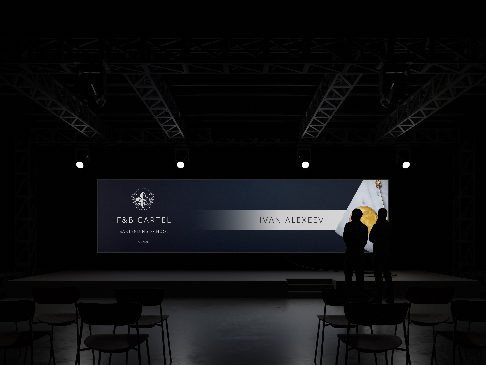
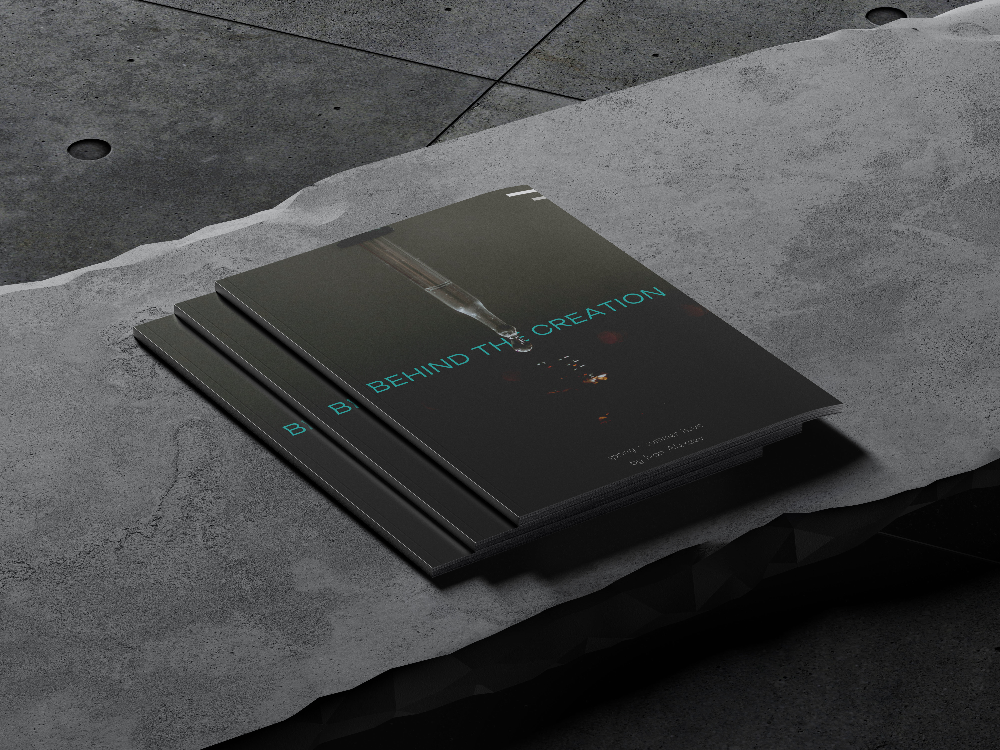

creating A HIGH-LEVEL CLASS WORK IS NO LONGER IMPOSSIBLE...
SINCE I MADE IT POSSIBLE
Skills. Experience. Passion.
Enhancing bartending skills hands-on
- team work
- service standarts
- certification tests
- the history of sprits & cocktails creation
- the rules of building technological cards
Building a bar from scratch efficiently
- creating a bar & wine lists according to the chosen concept
- managing suppliers and inspection compliance
- service standards, motivation, and certification schedules
- unique cocktails while balancing budget inflation
The devil is in the details
- website for your business
- chat-bot with all you need for your staff
- menus, brochures, business cards with attention to details

